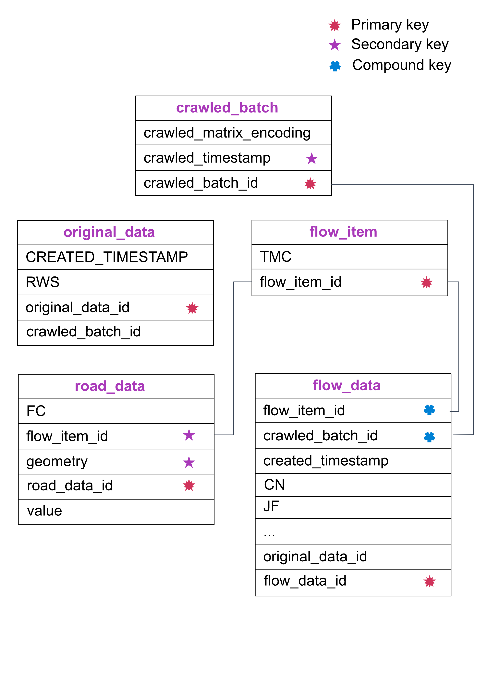
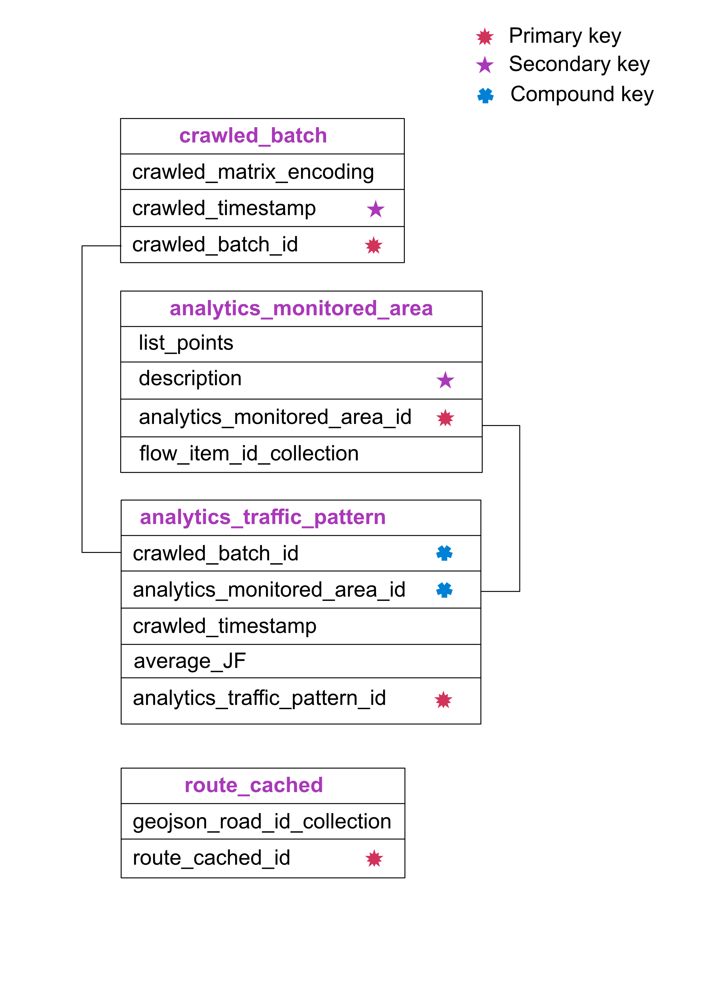

Database¶
Data Source¶
Before we talked about the databse schema, it would be helpful to see the raw data we gathered from HERE.com. A typical raw data would look like this: API playground and its corresponding documentation of the data can be found at interpreting HERE Maps real-time traffic tags
Database schema (Part 1)¶
Don’t panic, the next section gives more details on how the data is stored and interacted.
Storing Data (a higl-level description)¶
Basically every time we want to crawl some traffic data, we create a matrix of
URLs to request traffic json data from HERE.com. This matrix could represent a city or a route.
And matrix is stored as crawled_matrix_encoding in the crawled_batch table.
We also add a crawled_timestamp as a secondary key for time-related query, and
a crawled_batch_id for linking documents.
After we get raw data from HERE.com, we make a copy of it and store it in original_data
table. Then the raw data contains the traffic flow data and many road geometries. A typical
traffic flow data looks like this
"CF": [ # Current Flow. This element contains details about speed and Jam Factor information for the given flow item.
{
"TY": "TR", # Used when it is needed to differentiate between different kinds of location types.
"SP": 29.83, # Speed (based on UNITS) capped by speed limit MPH
"SU": 29.83, # Speed (based on UNITS) not capped by speed limit
"FF": 29.83, # The free flow speed on this stretch of road.
"JF": 0, # The number between 0.0 and 10.0 indicating the expected quality of travel. When there is a road closure, the Jam Factor will be 10. As the number approaches 10.0 the quality of travel is getting worse. -1.0 indicates that a Jam Factor could not be calculated.
"CN": 0.7 # Confidence, an indication of how the speed was determined. -1.0 road closed. 1.0=100% 0.7-100% Historical Usually a value between .7 and 1.0.
}
]
and a typical geometry looks like this
"SHP": [
{
"value": [
"41.88784,-87.62069 41.88737,-87.62068 " # GPS coordiantes
],
"FC": 4
},
{
"value": [
"41.88737,-87.62068 41.88692,-87.62068 "
],
"FC": 4
}]
We essentailly stored the road geometries in road_data table and traffic flow data in
flow_data table, and link them through flow_item_id of flow_item table.
A Query Example (high-level description)¶
A typical traffic-related query would ask for the traffic flow at some given time range with respect to a route.
Well, a route is consist of coordiantes. For each of those
coordiantes, and we can find the nearest road_data document
by using its geometry, a geospatial index.
Notice now we get the flow_item_id of the road_data document
Then we find the related crawled_batch_id with respect to the given time range
(Think of the crawled_batch_id as a time indicator).
Finally, we can retrieve the traffic flow data at flow_data table by using
[crawled_batch_id, flow_item_id] compound index.
Database schema (Part 2)¶
Don’t panic, the next section gives more details on how the data is stored and interacted.
Data Query and Analytics (a higl-level description)¶
It turned out that given a route, asking the nearest road_data document for each coordiantes
in the route is computationally expensive. Therefore we create a route_cached
table to remember all the road_data_id for a given route.
For analytics, we were interested in the traffic pattern of the entire city,
so we would sample some coordiantes in a given area and store the information
in analytics_monitored_area.
Finally, every time we crawl traffic flow data, we can update a
analytics_traffic_pattern document, in which we calculate the averageJF
(average Jamming Factor) for all the flow_item recorded in analytics_monitored_area